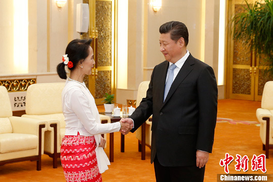
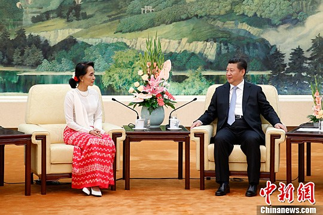

6月11日，中共中央总书记、国家主席习近平在北京人民大会堂会见由主席昂山素季率领的缅甸全国民主联盟代表团。中新社发盛佳鹏摄

6月11日，中共中央总书记、国家主席习近平在北京人民大会堂会见由主席昂山素季率领的缅甸全国民主联盟代表团。中新社发盛佳鹏摄
原标题：习近平会见昂山素季率领的缅甸全国民主联盟代表团
中新社北京6月11日电(记者 张朔)中共中央总书记、国家主席习近平11日在人民大会堂会见了由主席昂山素季率领的缅甸全国民主联盟代表团。
习近平指出，中缅是亲密友好的邻居。建交65年来，中缅传统友谊历经风雨从未改变，各领域务实合作成果丰富，成为休戚与共的利益共同体和命运共同体。这是两国历代领导人和两国人民共同努力的结果，要倍加珍惜。
习近平强调，中方始终从战略高度和长远角度看待中缅关系，支持缅甸维护主权独立和领土完整，尊重缅甸自主选择发展道路，支持缅甸民族和解进程，坚定不移推进中缅传统友好和务实合作。希望并且相信，缅方在中缅关系问题上的立场也将是一贯的，无论国内形势如何变化，都将积极致力于推动中缅友好关系发展。
习近平说，中国共产党同全国民主联盟开展交往以来，两党关系取得较快发展，交流合作日益密切。希望通过这次访问，你能够更深入地了解中国和中国共产党，这有助于增进双方相互理解和信任，为两党两国关系发展打下更好基础。也希望你和全国民主联盟继续发挥建设性作用，积极引导缅甸民众，公正理性看待中国和中缅合作，为两国关系发展增添更多正能量。
昂山素季说，缅中两国是邻居，而邻居是不可选择的，致力于两国友好关系发展至关重要。缅甸全国民主联盟重视缅中友好，钦佩中国共产党领导中国取得的巨大发展成就，希望通过此访深化两党关系，推动两国人民之间的友好关系向前发展。